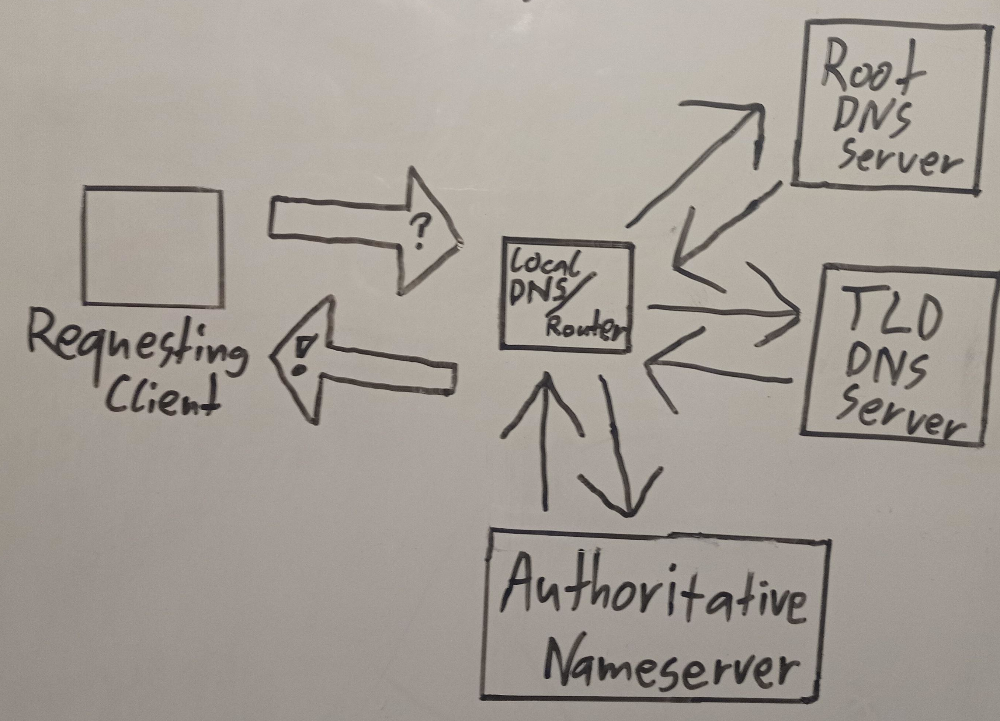

BytesOfProgress
Wiki
DNS - Domain Name System
A DNS (Domain Name System) server is a critical component of the internet that translates human-friendly domain names into IP (Internet Protocol) addresses, which computers and networked devices use to identify each other on the internet. DNS servers play a crucial role in making the internet accessible by providing a human-readable way to access websites and services. Without DNS, users would need to remember and enter complex IP addresses to access online resources, which would be impractical. But how does this work?
When you enter a domain name in a web browser, your device needs to know the corresponding IP address to establish a connection. This is where DNS servers come into play. Your device sends a DNS query to a DNS server, typically provided by your internet service provider ( ISP ) or a public DNS service like Google DNS or Cloudflare DNS.
DNS Resolution Process
The local DNS server (usually operated by your ISP) first checks its local cache to see if it already knows the IP address for the requested domain name. If it does, it provides the IP address immediately. If the IP address is not found in the local cache, the local DNS server forwards the query to higher-level DNS servers. These higher-level DNS servers follow a hierarchical structure and may include root DNS servers, top-level domain ( TLD ) servers ( .com, .org ), and authoritative DNS servers that manage specific domain names. The authoritative DNS server for the requested domain name provides the IP address to the higher-level DNS server, which then passes it back down to the local DNS server. Finally, the local DNS server returns the IP address to your device, allowing it to connect to the desired website or service.
DNS-Caching
To improve performance and reduce the load on DNS servers, DNS records are typically cached at various levels. This means that frequently accessed domain names are resolved more quickly because their IP addresses are already known and stored in DNS caches.
DNS-Records
A ( Address ) Record
An A record maps a domain name to an IPv4 address. It's used to resolve hostnames to IP addresses. For example, an A record for "example.com" might point to "192.168.1.1."
AAAA ( IPv6 Address ) Record
An AAAA record performs the same function as an A record but is used for IPv6 addresses. It maps a domain name to an IPv6 address.
CNAME ( Canonical Name ) Record
A CNAME record is used to create an alias for a domain name. It allows one domain name to be mapped to another domain's A or AAAA record. For example, you could use a CNAME to point "www.example.com" to "example.com."
MX ( Mail Exchanger ) Record
MX records specify the mail servers responsible for receiving email messages sent to a domain. They include a priority value to determine the order in which mail servers should be used. Multiple MX records can exist for redundancy.
TXT ( Text ) Record
TXT records can store arbitrary text data associated with a domain name. They are commonly used for adding verification or authentication information to a domain, such as SPF (Sender Policy Framework) records for email authentication.
NS ( Name Server ) Record
NS records specify which name servers are authoritative for a particular domain. These records are used to delegate control of subdomains to other name servers.
PTR ( Pointer ) Record
PTR records are used in reverse DNS lookups to map an IP address back to a domain name. They are often used by email servers and for logging purposes.
SRV ( Service ) Record
SRV records define the location of specific services within a domain. They include information about the service type, protocol, and port number.
SOA ( Start of Authority ) Record
The SOA record contains administrative information about a DNS zone, including details about the primary authoritative name server, contact information, and various timing parameters.
DNSSEC ( DNS Security Extensions ) Records
DNSSEC records are used to enhance DNS security by providing digital signatures and cryptographic authentication of DNS data to prevent DNS spoofing and cache poisoning attacks.
These are some of the most common DNS record types, but there are other specialized records used for various purposes. DNS records are managed by domain registrars, hosting providers, or DNS hosting services, and they are crucial for ensuring the proper functioning of domain names and internet services.
back